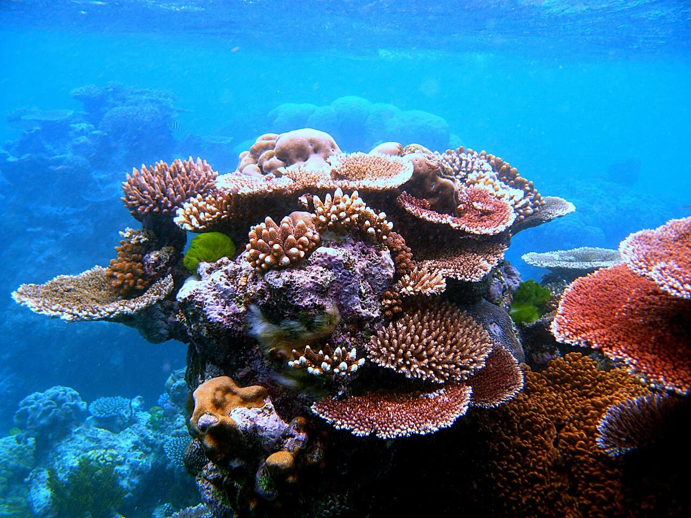

Grande Barrière de corail
Cairns, Australie · plongée, snorkeling, baignade

Le plus grand récif corallien du monde, visible depuis l'espace. Snorkeling et plongée dans une biodiversité unique.
- Lieu
- Cairns, Australie
- Niveau
- Débutant
- Activités
- plongée, snorkeling, baignade
- Type d'eau
- Mer / océan
- Coordonnées
- -16.00, 145.85 (position approximative du secteur)
Dangers à connaître
- Méduses-boîtes en saison (combinaison).
- Soleil intense, protège-toi.
Le conseil d'Ocean Buddy
En saison méduses, porte une combinaison intégrale (lycra).
Ouvrir dans Ocean Buddy Télécharger sur l'App Store
Source : Description historique Ocean Buddy · vérification externe en attente.